visual_001_alpha_rop
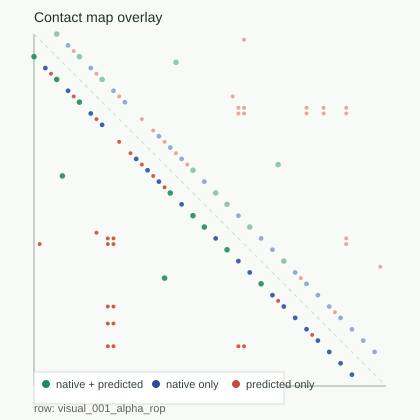
F1: 0.3125 | visible_partial_success
Native-gap analysis explains failures after prediction; repairs remain sequence-only before scoring.

F1: 0.3125 | visible_partial_success
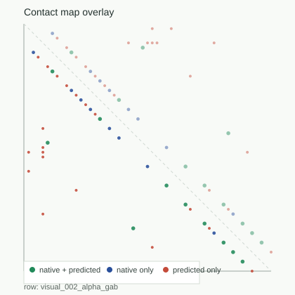
F1: 0.425532 | visible_partial_success
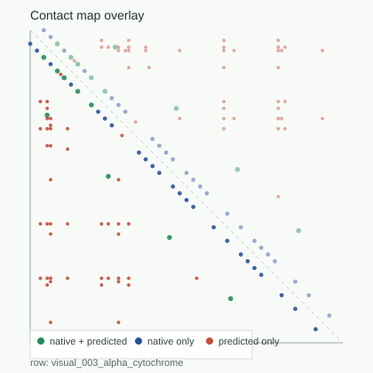
F1: 0.211765 | visible_partial_success
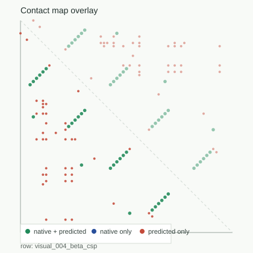
F1: 0.5625 | visible_partial_success
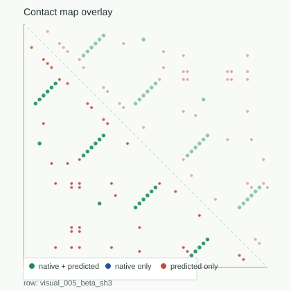
F1: 0.553191 | visible_partial_success
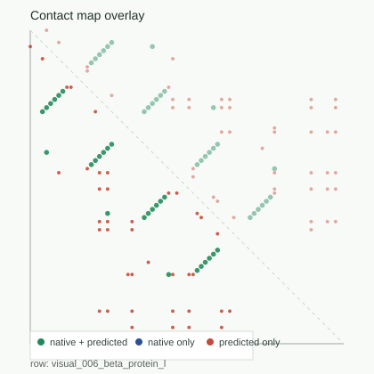
F1: 0.545455 | visible_partial_success
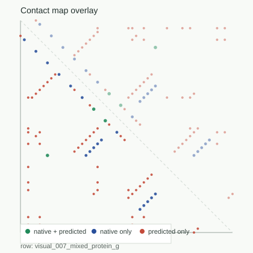
F1: 0.081081 | bad_beta_pairing
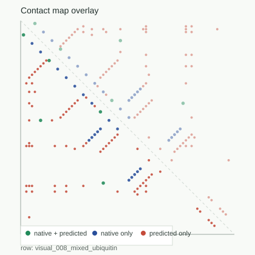
F1: 0.1 | premature_compaction
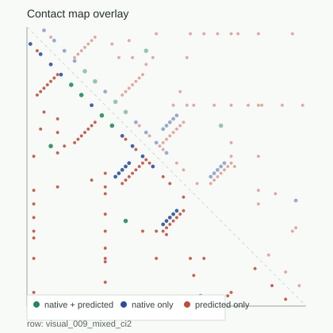
F1: 0.113208 | visible_partial_success

F1: 0.0 | disorder_over_collapse
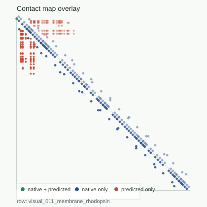
F1: 0.019512 | membrane_mis_topology
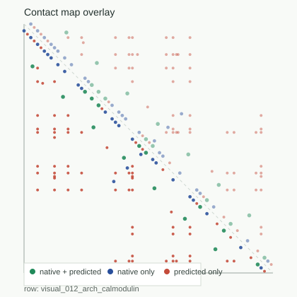
F1: 0.24 | visible_partial_success
| row | baseline F1 | repaired F1 | long recall | beta recall | mechanism | visuals |
|---|---|---|---|---|---|---|
| visual_001_alpha_rop | 0.266667 | 0.3125 | 1.0 | visible_partial_success | overlay | trajectory | |
| visual_002_alpha_gab | 0.363636 | 0.425532 | 1.0 | visible_partial_success | overlay | trajectory | |
| visual_003_alpha_cytochrome | 0.126582 | 0.211765 | 1.0 | visible_partial_success | overlay | trajectory | |
| visual_004_beta_csp | 0.033333 | 0.5625 | 1.0 | 1.0 | visible_partial_success | overlay | trajectory |
| visual_005_beta_sh3 | 0.0 | 0.553191 | 1.0 | 1.0 | visible_partial_success | overlay | trajectory |
| visual_006_beta_protein_l | 0.0 | 0.545455 | 1.0 | 1.0 | visible_partial_success | overlay | trajectory |
| visual_007_mixed_protein_g | 0.083333 | 0.081081 | 1.0 | 0.25 | bad_beta_pairing | overlay | trajectory |
| visual_008_mixed_ubiquitin | 0.096774 | 0.1 | 1.0 | 0.5 | premature_compaction | overlay | trajectory |
| visual_009_mixed_ci2 | 0.119403 | 0.113208 | 0.666667 | 0.285714 | visible_partial_success | overlay | trajectory |
| visual_010_disorder_nupr1 | 0.0 | 0.0 | 1.0 | disorder_over_collapse | overlay | trajectory | |
| visual_011_membrane_rhodopsin | 0.019512 | 0.019512 | 0.0 | membrane_mis_topology | overlay | trajectory | |
| visual_012_arch_calmodulin | 0.13913 | 0.24 | 0.0 | visible_partial_success | overlay | trajectory |
{kind=link}
{kind=link}
{kind=link}
{kind=link}
{kind=link}
{kind=link}
{kind=link}
{kind=link}
{kind=link}
{kind=link}
{kind=link}